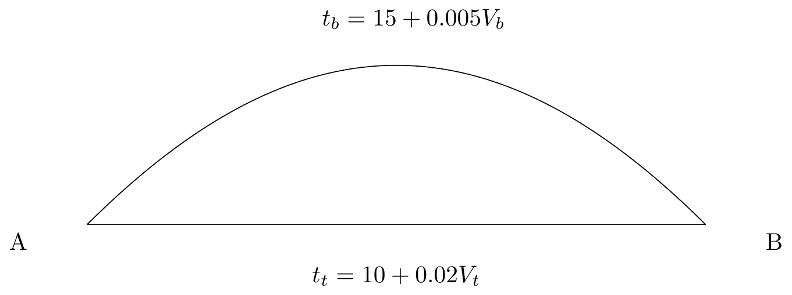
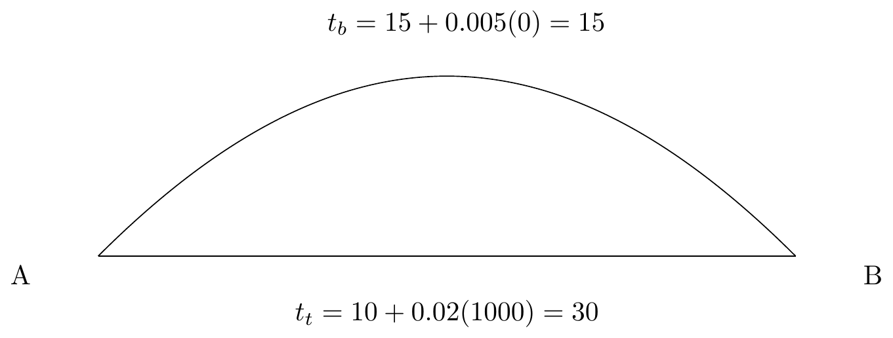

Chapter 5 Network Assignment and Validation
The purpose of network assignment is to estimate the traffic flows that will occur on each highway link, given the highway network and the trips flowing from all origins to all destinations (determined by the other three steps of the four-step model).
On average, we start from the assumption that people will take the shortest path available to them. The travel time on a particular road is a function of the road’s capacity as well as its volume. Because the volume is not known when we start a traffic assignment process, we will have to find the solution iteratively.
5.1 Volume - Delay Functions
A volume-delay function (VDF) calculates the increase of travel time on a roadway based on the ratio of volume \(V\) to capacity \(C\). A popular equation in travel modeling is a function developed by the Buruea of Public Roads (the predecessor to the US Department of Transportation). The BPR VDF is
\[\begin{equation} t = t_0[1 + \alpha * (V/C)^\beta] \tag{5.1} \end{equation}\]
Where \(t\) is the travel time on the link, \(t_0\) is the base travel time, and \(\alpha, \beta\) are calibrated parameters. Figure 5.1 shows average values for BPR functions obtained from a sample of MPO travel models of different sizes. As roads become more heavily loaded, the travel time increases and other routes become more attractive.
Figure 5.1: Average BPR VDF curves in a sample of MPO models.
5.2 Assignment Algorithms
Consider that we have the network below, with two routes between nodes \(A\) and \(B\). The bypass is longer initially, but its travel time will grow less quickly with added volume.

In general, the operating theory of network assignment is called static user equilibrium,
A network is in static user equilibrium if a person cannot find a shorter path between their origin and destination. That is, all paths that are used have the same travel cost, and all longer paths are unused.
In a small and simple network, we could just generate a system of equations that represent the SUE conditions, and solve for the values that will give us that loading. In our example, we can write the system of equations as
\[\begin{align*} & t_b &- 0.005 V_b & &= 15 \\ t_t & & &- 0.02 V_t &= 10 \\ t_t & - t_b & & &= 0\\ & & V_b & + V_t &= 1000\\ \end{align*}\]
We can solve this using our matrix calculation skills from linear algebra. The SUE assignment is reached when 600 vehicles take the bypass and 400 vehicles take the through road, because when that happens both the routes have an equal travel time of 18 minutes.
(A <- matrix(c(0, 1, -0.005, 0,
1, 0, 0, -0.02,
1, -1, 0, 0,
0, 0, 1, 1), byrow = TRUE, ncol = 4))## [,1] [,2] [,3] [,4]
## [1,] 0 1 -0.005 0.00
## [2,] 1 0 0.000 -0.02
## [3,] 1 -1 0.000 0.00
## [4,] 0 0 1.000 1.00b <- c(15, 10, 0, 1000)
# Ax = b -> x = A^-1 b
solve(A) %*% b## [,1]
## [1,] 18
## [2,] 18
## [3,] 600
## [4,] 400It is not going to be feasible to construct this UE matrix for more complex networks. So engineers have developed heuristic algorithms that iterate to find a solution that replicates the UE conditions.
5.2.1 All-or-Nothing
The most basic way to assign trips is with an “all-or-nothing” (AON) assignment. This simply puts all the trips between \(i\) and \(j\) on the shortest route. This is obviously not great in a lot of ways, because it will overload some roads while leaving other roads completely empty. So if we assign 1000 trips to this network, the volumes and travel times become

We could repeat this process many times, assigning new AON loads to the updated travel times. This won’t converge to anything, but we could take the average of all the different AON loadings and run with that. It’s not perfect, but it’s easy.
5.2.2 Incremental Assignment
Instead of assigning the flows all at once, we might be able to get a more realistic loading by loading the flows in increments. Here’s how this algorithm works:
- Select increments \(p_n\) that sum to 1 (e.g., 0.4, 0.3, 0.2, and 0.1)
- Calculate the travel times on all links
- Assign \(V_n * p_n\) trips to the network via All-or-Nothing
- Return to step 2 with the next increment
Assigning the 1000 trips to our two-route network using the increment values results in the following successive assignments.
| Iteration | Increment | Vb | tb | Vt | tt |
|---|---|---|---|---|---|
| 0 | 0 | 15 | 0 | 10 | |
| 1 | 0.4 | 0 | 15 | 400 | 18 |
| 2 | 0.3 | 300 | 16.5 | 400 | 18 |
| 3 | 0.2 | 500 | 17.5 | 400 | 18 |
| 4 | 0.1 | 600 | 18 | 400 | 18 |
5.2.3 Successive Averages (FHWA) Assignment
A big problem with the AON assignment (and with incremental assignment) is the large jump in travel times between iterations. It also is not guaranteed to converge to any particular solution, and the outcome is determined by the assumptions of the number of increments applied.
This can be improved with a method developed by FHWA that is designed to repeatedly load the network and update the travel times by a diminishing rate. In this method, the volume on any particular link after iteration is given by
\[\begin{equation} V_{n} = (1-\phi) * V_{n-1} + \phi F \tag{5.2} \end{equation}\]
Where \(\phi = 1 / n\) and F is the load of an All-or-Nothing assignment. As \(n\) increases, the relative amount of weight given to the previous assignment increases relative to the new AON assignment. The following table shows ten iterations of this algorithm.
| Iterations | Load | phi | Vt | tt | Vb | tb |
|---|---|---|---|---|---|---|
| 1 | F | 1 | 1000 | |||
| V | 1000 | 30 | 15 | |||
| 2 | F | 0.5 | 1000 | |||
| V | 500 | 20 | 500 | 17.5 | ||
| 3 | F | 0.33333333 | 1000 | |||
| V | 333.33 | 16.67 | 666.67 | 18.3333333 | ||
| 4 | F | 0.25 | 1000 | |||
| V | 500 | 20 | 500 | 17.5 | ||
| 5 | F | 0.2 | 1000 | |||
| V | 400 | 18 | 600 | 18 | ||
| 6 | F | 0.16666667 | 1000 | 0 | ||
| V | 500 | 20 | 500 | 17.5 | ||
| 7 | F | 0.14285714 | 1000 | |||
| V | 428.571429 | 18.5714286 | 571.428571 | 17.8571429 | ||
| 8 | F | 0.125 | 10 | 1000 | 20 | |
| V | 375 | 17.5 | 625 | 18.125 | ||
| 9 | F | 0.11111111 | 1000 | |||
| V | 444.44 | 18.89 | 555.56 | 17.78 | ||
| 10 | F | 0.1 | 1000 | |||
| V | 400.00 | 18.00 | 600.00 | 18.00 |
5.2.4 Frank-Wolfe
We can represent SUE traffic assignment as a nonlinear optimization problem. Let
- \(v_a =\) vehicles assigned to link \(a\).
- \(S_a(v_a) =\) the travel cost on link \(a\) as a function of its volume (VDF function)
- \(X_{ij}^r =\) the total number of vehicles traveling from \(i\) to \(j\) on the sum of links that represent route \(r\).
We want to minimize the total travel cost
\[\begin{equation} \sum_a \int_0^{v_a} S_a(x) dx \tag{5.3} \end{equation}\]
subject to the constraints
\[\begin{align*} v_a &= \sum_i \sum_j \sum_r \delta_{ij}^{ar}X_{ij}{r}\\ \sum_r X_{ij}^r &= T_{ij}\\ X_{ij}^r &\geq 0 \end{align*}\]
In text, the constraints are as follow: the volume on a link is a sum of the volume on all routes that use that link (\(\delta\) is indicator), the total of all routes has to equal the total number of trips assigned, and the paths on a route are not allowed to be negative.
Various algorithms can be used to find the values of \(v_a\) that minimize this objective function subject to these constraints. A popular algorithm is the Frank-Wolfe algorithm, though other algorithms have been developed that converge more quickly under different scenarios.
With these algorithms, it is essential to allow the algorithm to converge appropriately. A measure of the convergence is a statistic called the “relative gap,” or the difference between the assignment at that iteration and an AON assignment made with the calculated travel times. As this gap becomes smaller, it means that the difference between travel times on the routes are becoming closer to each other. The figure below shows the value of the relative gap after several thousand iterations in the Washington, D.C. travel model.

Figure 5.2: Relative gap after several thousand iterations.
Large networks may take many hours to reach convergence that is acceptable for policy analysis. There is a large incentive to “cut corners” by shrinking the maximum number of iterations that are run, but this can lead to strange behavior.
Homework

Network
The figure above7 represents a simple four-node network where 7000 vehicles travel from A to D, and 5000 travel from B to D (there are no additional trips from C to D). Link travel times for the network are given by the functions below.
\[\begin{align*} t_{AD} =& 20 + 0.01 q_{AD}\\ t_{AC} =& 10 + 0.005 q_{AC}\\ t_{CD} =& 12 + 0.005 q_{CD}\\ t_{BC} =& 7.25 + 0.005 q_{BC}\\ t_{BD} =& 20 + 0.01 q_{BD} \end{align*}\]
Question 1: Solve for the user equilibrium (UE) link flows and travel times by solving a set of simultaneous equations that explicitly define the UE conditions. Demonstrate that your solution is the user equilibrium by showing through example that all UE conditions are satisfied.
Question 2: Perform four iterations of All Or Nothing (AON) assignment on the network and O/D volumes. Show the link flows and travel times at the end of each iteration and compute the average link loads and travel times.
Question 3: Perform four iterations of an incremental assignment assignment using the increment values 0.4, 0.3, 0.2, and 0.1. Show the link flows and travel times at the end of each iteration.
Question 4: Assign trips using the successive averages (FHWA) heuristic. Show the link flows and travel times for five successive assignments, and the final assignment.
Question 5: Compare these three traffic assignment heuristic approaches to the UE assignment and to each other. How do the resulting flow patterns differ (cite specific differences)? Which one comes closest to the UE flows?
Question 5: You are considering a road widening project in a suburb of a large metropolitan area (indicated with the blue circle). The difference in loaded volumes between your base scenario (no-build) and the widening is given in the figure below. What is a likely explanation for the patterns shown in the figure?

Figure 5.3: Difference in assigned volumes when adding a lane in area with blue circle.
Laboratory Assignment
The highway volume-to-capacity curves in the Roanoke Model have already been largely calibrated8. They use the Bureau of Public Roads (BPR) format,
\[T_c = T_0 * (1 + \alpha (V / C)^\beta)\] Create a plot showing the values of these curves for varying VOC ratios and discuss the implications of the different curves on different facility types in your report. Note that there are 5 facility types in the BPR table but 11 facility types in the model network. The assignment script files have comments that build a crosswalk between the two facility type definitions.
For this lab, you will create a model validation report where you examine the following:
- Root mean squared error (RMSE) by facility type, area type, volume group, and by screenline. Are there certain classes that are outperforming others?
- Observed vs Modeled link volume scatterplots: an X-Y fit line by facility type as well as a maximum desirable deviation plot defined in NCHRP 765.
- Geographic distribution of link error.
Comment on the Roanoke model’s calibration.